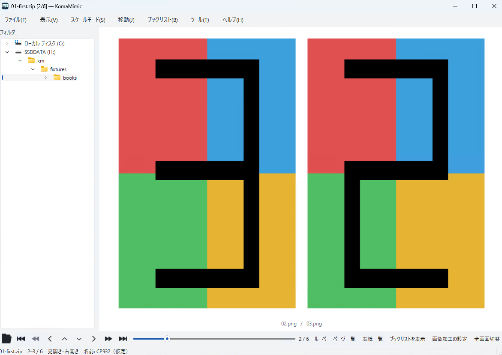

Display and image processing
日本語 | English
Screenshots on this page show the Japanese UI.
Spreads and zoom
Choose single-page or spread display from the View menu. New settings enable
right-to-left opening, spreads, and a separate cover page. Space toggles automatic
spreads for images; this is separate from explicitly selecting single-page/spread
mode. Toggle opening direction with backslash (the ¥ key on a JIS keyboard).
X fits to the window, C shows original size, and numeric keypad +/- zooms in/out.
Scale mode selects the fitting rule and interpolation method.

Filenames and thumbnails
Filenames below reading images are hidden by default. Enable them in Preferences → Display. When hidden, the filename band is available for fitting, panning and scan scrolling.
Added page numbers are hidden on page thumbnails by default; digits in actual filenames remain. View → Thumbnail settings opens page-number and custom-layout preferences. Custom defaults are 64×64, 0 columns (automatic), zero horizontal/vertical spacing, one filename line, upper-left origin and no decorative frame. Set fixed columns, dimensions, spacing, 0/1/2 filename lines, upper-right origin and optional frames.
Width, height and spacing use Qt logical pixels, not DPI (dots per inch). For example, width 64 represents 64 logical pixels; a 200% high-DPI display may use roughly 128 physical pixels to render it.
Zero lines also removes the caption area. Images retain their aspect ratio; tooltips show full filenames. Custom layout settings are shared by covers and pages. Fit-to-screen and eight-column modes remain available.
Preferences → Thumbnails also offers full-list preloading and memory retention. Preloading is off by default, with visible items taking priority.
Folder browser
The default browser has two vertically arranged panes. Double-click a folder in the upper list, or press Enter, to use it as the lower tree's root without changing the right-hand view. Double-click a folder in the lower tree, or press Enter, to open its covers on the right. Selection alone does not navigate. Browsing folders on the right never moves the left tree's root or selection.
The two-pane top level is the virtual Desktop on Windows and virtual Places on
macOS/Linux. Places provides shortcuts to Home, Downloads and other standard
folders, the file system (/) and available volumes. Windows virtual items come
from the OS Shell and vary with the OS and its configuration.
Disable the two-pane browser in Preferences → Display to use a single tree:
PC containing drives on Windows, or / on macOS/Linux. The chosen mode is saved.
F3 toggles the entire left browser. Drag the divider to resize the panes; its
position is saved too.
Menus and the reading toolbar
The bottom reading toolbar is hidden by default. Enable it with View → Show toolbar or Preferences → Display. In full screen, reveal the menu from the top edge and an enabled reading toolbar from the bottom edge. Preferences offers fixed, automatic, and hidden modes. Edit the left/right action groups and central page bar under Control settings → Toolbar.
Processing and saving
Use Tools → Image processing for rotation, cropping, grayscale, color adjustments,
and other operations. Processing is initially off; enable it with F or by
selecting a processing profile. Script filters run after native processing.
Normal display processing and logical page edits do not directly change original images or archives. Use saving/export to retain the result. Renaming real files and moving them to the trash are separate actions. Export books created from the clipboard before quitting if you need to keep them. PDF output consists of raster images and does not retain text-search information or links from the original PDF. Image processing, page editing, image export, and printing do not apply to the document view.
See Differences from MangaMeeya for compatibility and sorting persistence.